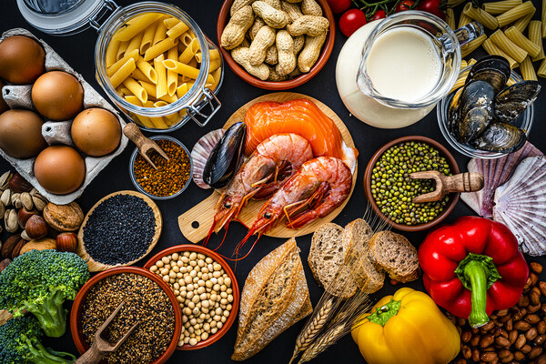

TECHNOLOGY
Helping roboto Work together to exlpore the Moon and Mars
Penn Engineers, NASA, and five other universities tested robotic systems designed to help unmanned explorers cooperate in the dunes of White Sands, New Mexico, paving the way for Moon and Mars exploration.


SOCIAL SCIENCE
Taylor Swift, storytelling, and climate communicationCAMPUS & COMMUNITY
Fueling growth locally, together
NATURAL SCIENCE
A world shaped by water and access
HEALTH & MEDECINE
Penn Dental on Cedar bridges medicine and dentistry, lightens ER demandsPenn Dental Medicine at PHMC on Cedar is one of five community care programs the School of Dental Medicine operates. At Penn Dental on Cedar, part of the mission is to integrate dental and medical care.
Upcoming Events
TALKS
AI and Our Future worldThis talk,free and open to the penn community, will focused on emerging projects within the penn Artifical intelligence and Technology (PennAITech)collaboratory for Healthy aging. panelists will discuss the goal of pennAITech: to innovate AI technology that supports older adults'those with Alzheimer'Disease and Alzheimer disease and related dementias in their home setting. register to attend.

TALKS
The Human Costs of American Energy in Transitionpresent by the Kleiman center for enery policy and moderated by energy policy now host Andy stone, this discussion energy scholars sanya carley and David konisky about their new book release,"power lines",will be a critical conversation that unpacks the human -centered complexities of America's energy transaction Free and open to the public.Register to attend'
SPECIAL EVENTS
E-Waste Recycling Drivepenn GSE's Green Commitment Collaborative invites the penn community to recycle any broken or unwanted electronics from your home or workplace. Accepted items include baterries,computers,phones,printers,TVs,and more. All devices will be securely stored and wiped of Review the full list of recyclaable e-waste.